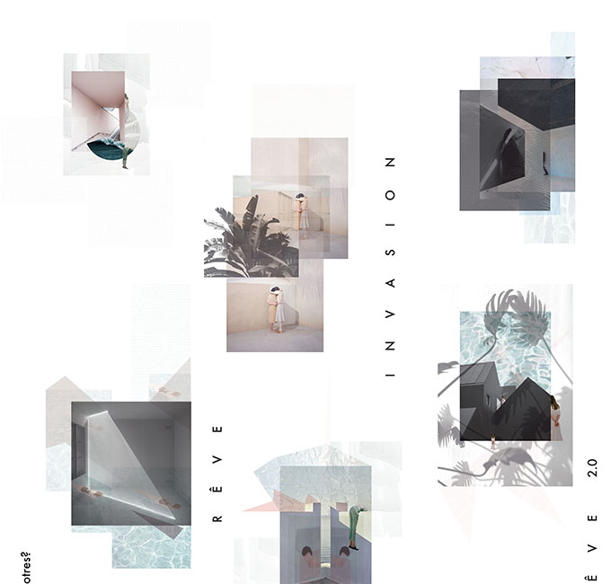
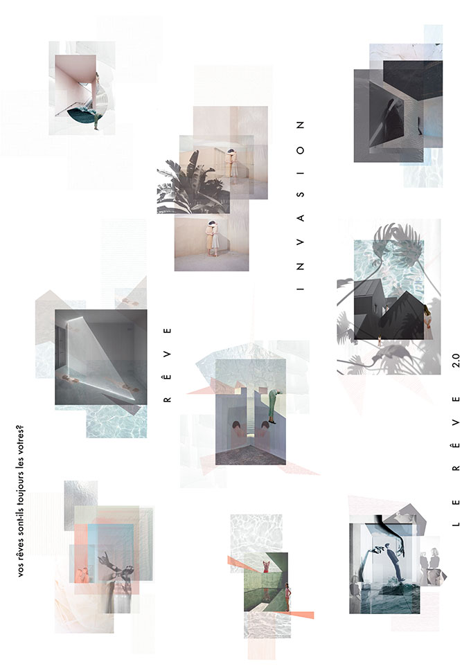
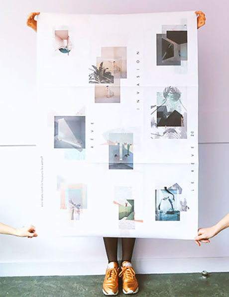
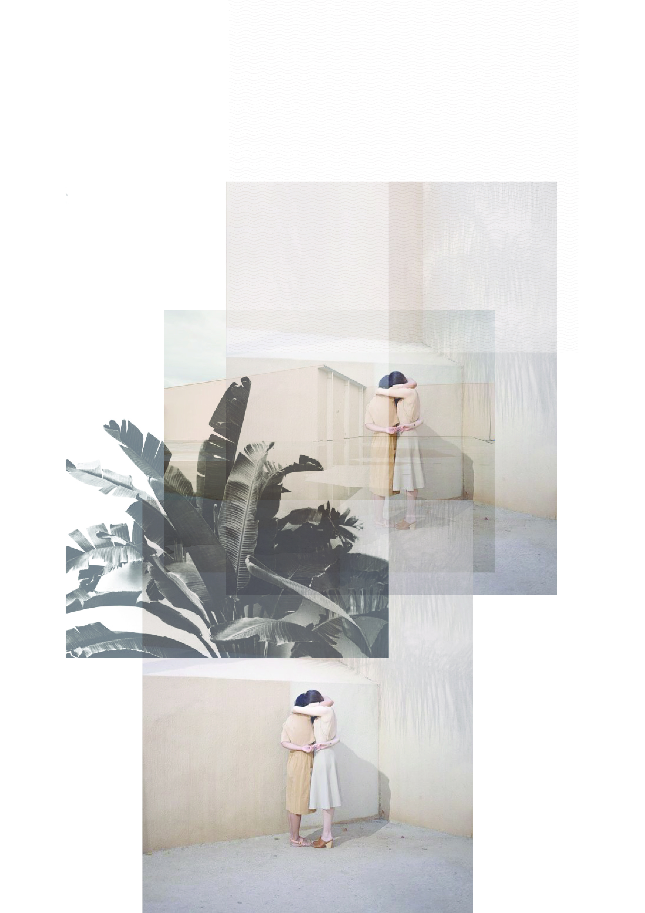
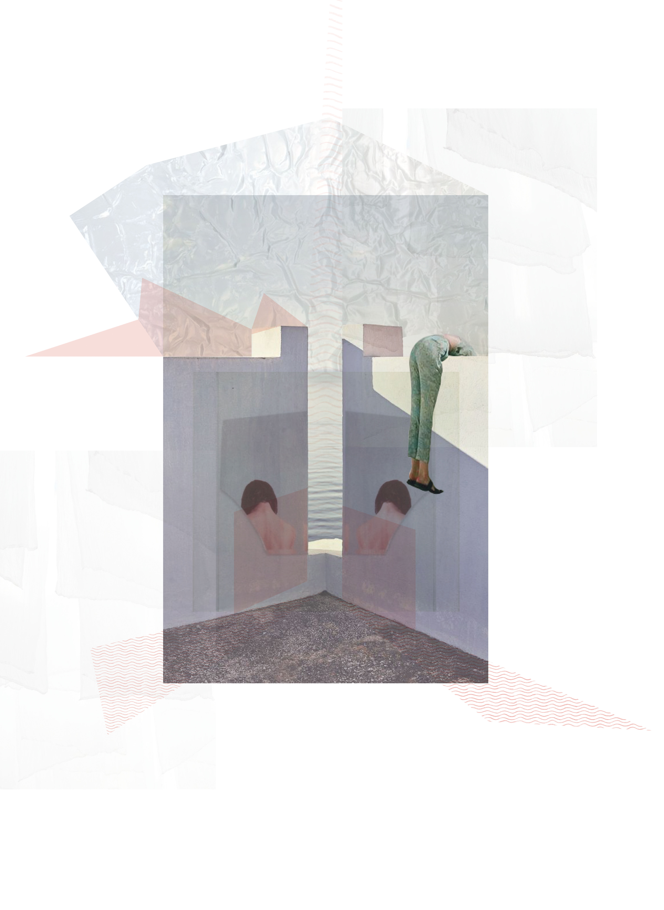
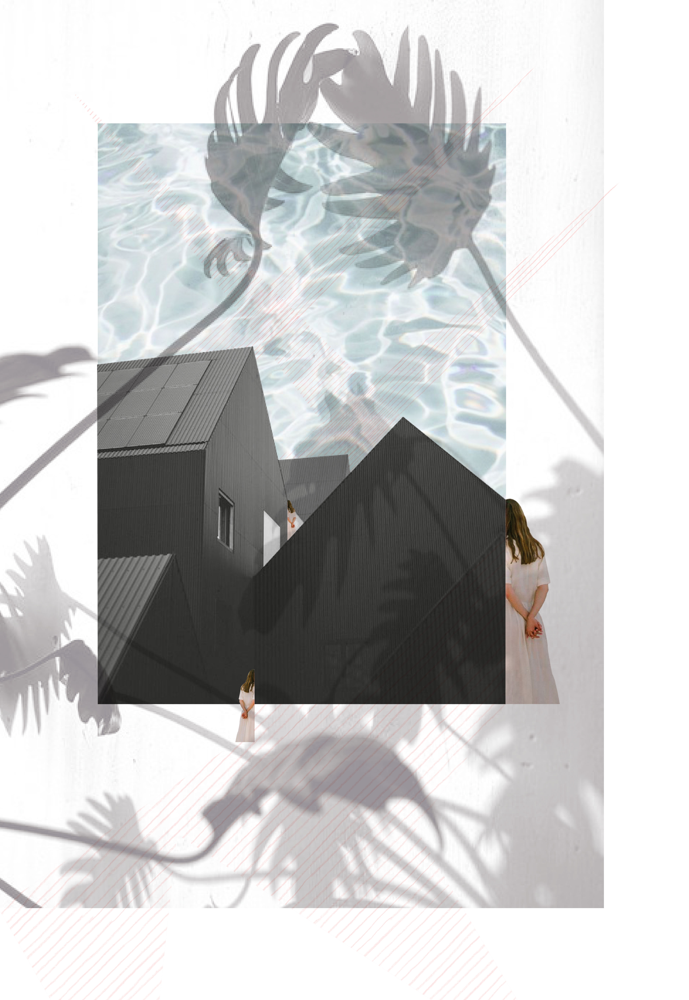
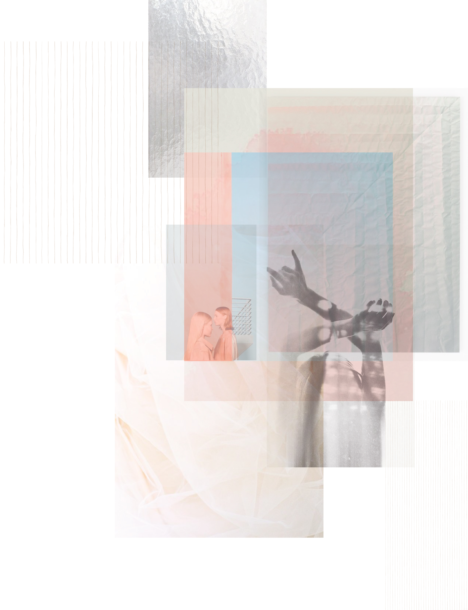
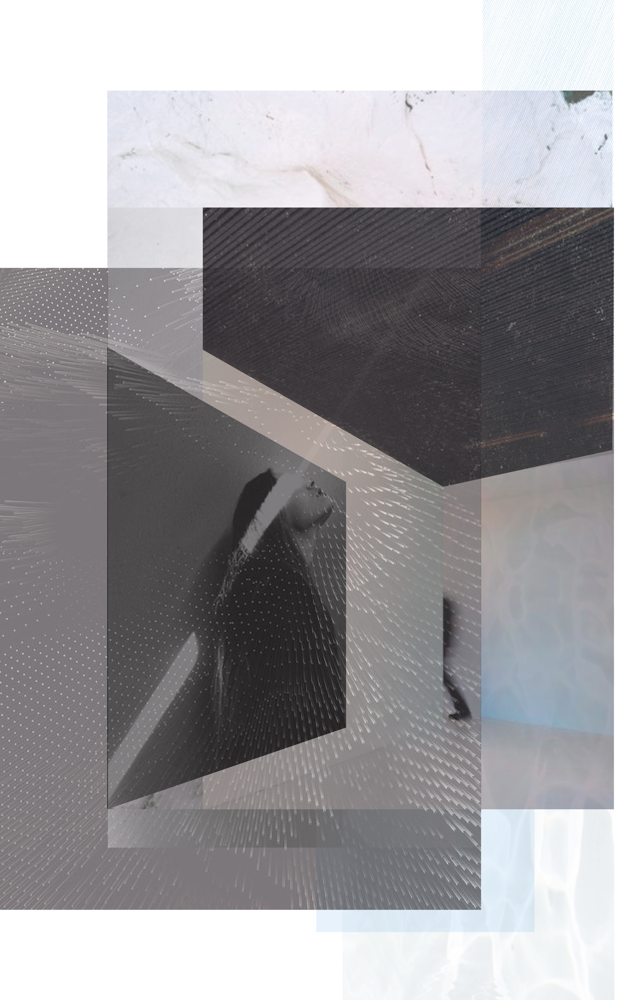
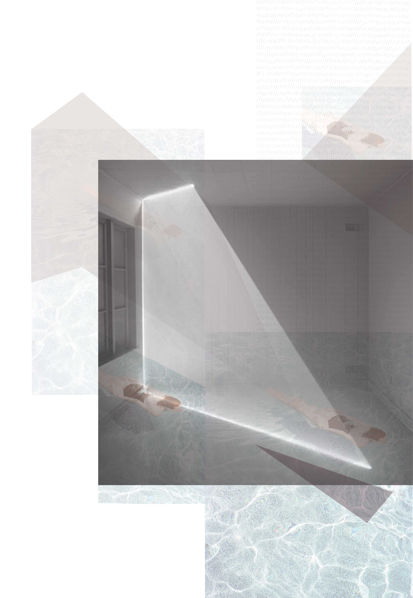

The dream 2.0—The dystopias of communication
Dimensions 90 x 140
Printed on a plotter
Toulouse—February 2017
A project that questions the dystopias of communication and was fueled by a conference of the same name that took place
at the University Jean Jaurès-Toulouse.This is the idea that in 30 years, we will all be registered, registered through our
smart-phones, computers, mails, bills, phone calls, networks, professions, bank accounts and by all others possible and
imaginable means. Those who exclude themselves from this system will then be considered as potential dangers and disrupters
of this high-tech society. The purpose of the maneuver will be to control the individual as much as possible in order to enforce
the rules. This procedure will remove all privacy from citizens. The only time out of sight will be in dreams. But in view of all
the cutting edge technology already in place, what can guarantee that those dreams are ours? What if our dreams are also
infiltrated without us paying attention? This project pushes the limits of intimacy to the dream that is supposed to be formed
freely in our unconscious. The illustrations were built on the dream representation codes. Codes that involve for example a certain
lightness, a feeling of blur sometimes even confusion, a succession of images, a universe desired from reality and at the same time
completely dreamed. For this reason, the illustrations are made in the manner of collages (constructed reality) and they are not enclosed
in a frame. Inside each dream a very subtle thread symbolizes the invasion, the protagonists in doubt, flee it.
at the University Jean Jaurès-Toulouse.This is the idea that in 30 years, we will all be registered, registered through our
smart-phones, computers, mails, bills, phone calls, networks, professions, bank accounts and by all others possible and
imaginable means. Those who exclude themselves from this system will then be considered as potential dangers and disrupters
of this high-tech society. The purpose of the maneuver will be to control the individual as much as possible in order to enforce
the rules. This procedure will remove all privacy from citizens. The only time out of sight will be in dreams. But in view of all
the cutting edge technology already in place, what can guarantee that those dreams are ours? What if our dreams are also
infiltrated without us paying attention? This project pushes the limits of intimacy to the dream that is supposed to be formed
freely in our unconscious. The illustrations were built on the dream representation codes. Codes that involve for example a certain
lightness, a feeling of blur sometimes even confusion, a succession of images, a universe desired from reality and at the same time
completely dreamed. For this reason, the illustrations are made in the manner of collages (constructed reality) and they are not enclosed
in a frame. Inside each dream a very subtle thread symbolizes the invasion, the protagonists in doubt, flee it.









